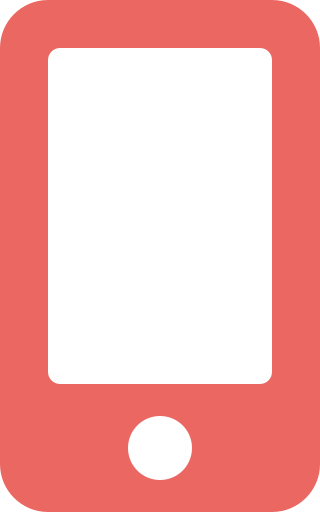
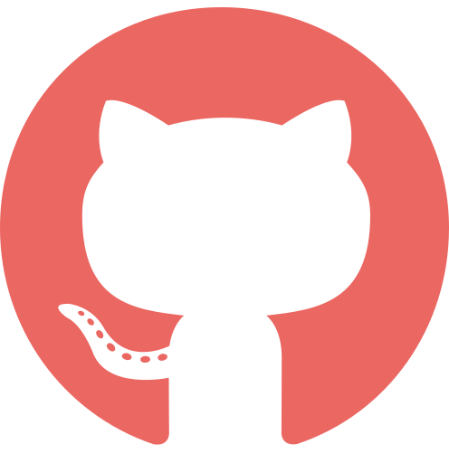
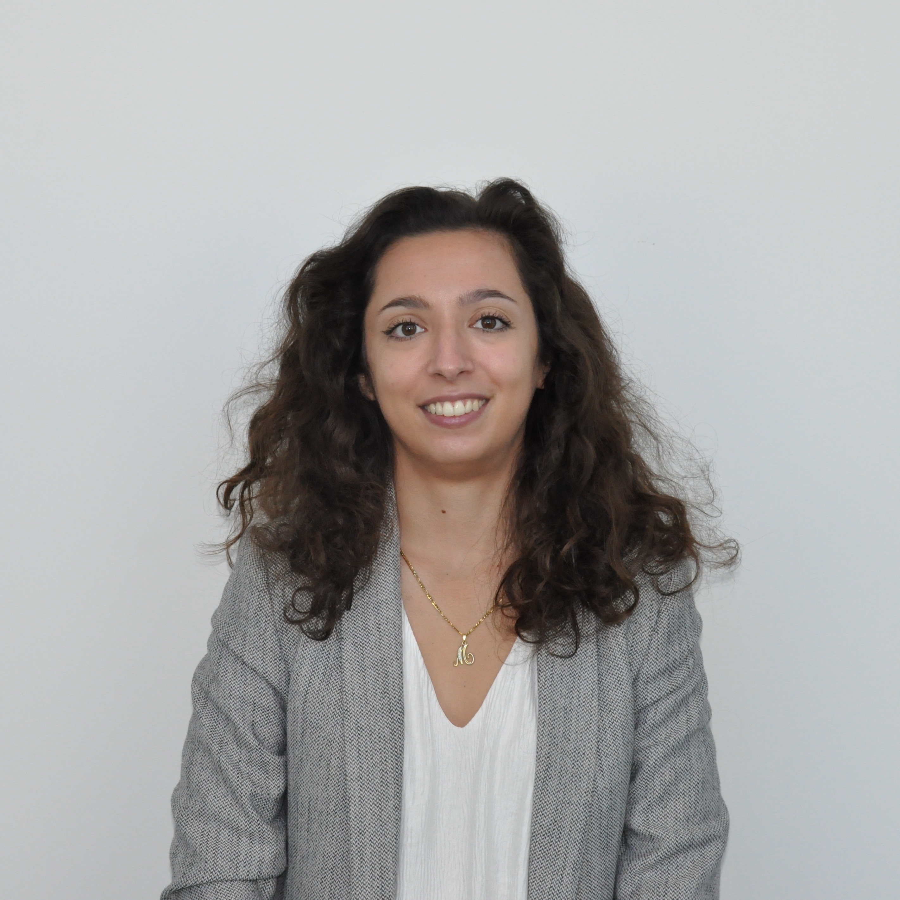

Contact
-

Tél. : 06 64 86 12 73
-
Mail : marie.costa13@gmail.com
-

GitHub : MarieC-Dev
-
LinkedIn : Marie Costa
Résumé

Âme curieuse et esprit créatif, j’aime apprendre au quotidien.
Actuellement développeuse front-end, mon objectif est de devenir développeuse full-stack. Mon défi personnel est d’apprendre le plus de langage et de framework possible car j’aimerais être polyvalente pour pouvoir être opérationnelle sur n’importe quelles tâches que l’on me confiera. J’ai pour habitude d’apprendre en autodidacte et j’apprécie le fait qu’un professeur ou un collègue de travail soit à mes côtés pour me former.
En septembre 2020, j’ai intégré l’école Epitech en pré-MSc. Depuis la rentrée 2021, je suis en première année de master en alternance, à raison de 3 jours en entreprise et 2 jours à l’école. Je me suis orientée dans cette voie pour apprendre à développer des sites web mais aussi des applications mobiles et des programmes.
Loisirs
Handball
(pendant 11 ans)
Dessin
(depuis l'enfance)
Snowboard
(depuis l'âge de 14 ans)
Wakeboard
(depuis 1 an)